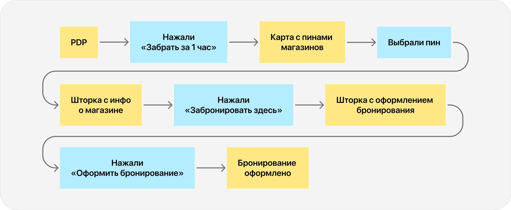
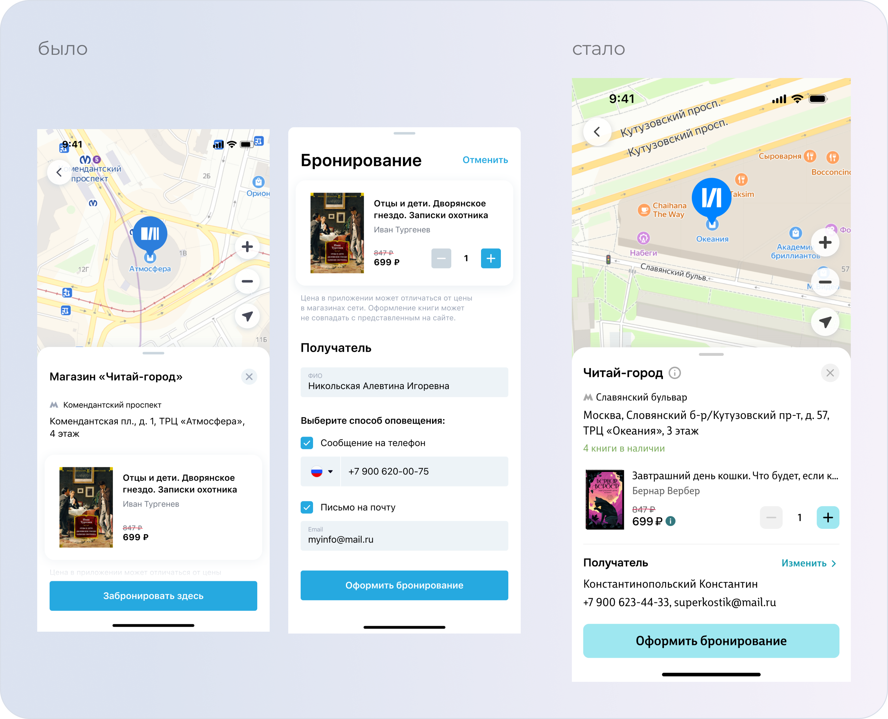
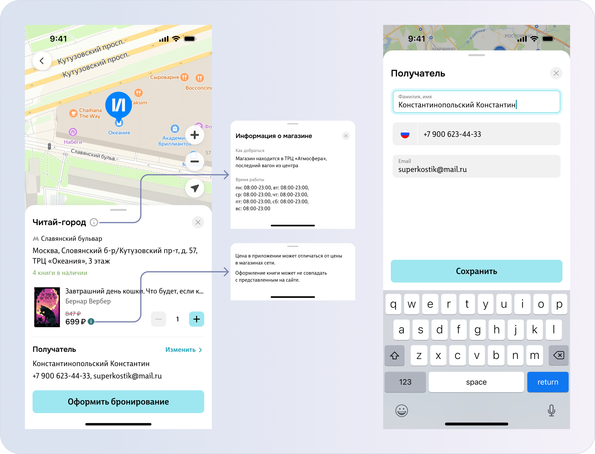

О задаче
Упростить повторное бронирование, автоматически подставляя магазин из предыдущей брони и позволяя оформить заказ в один клик без перехода на карту
Результаты
- CR в бронирование увеличилось на 6.6 п.п.
- Доля бронирований от остальных типов заказов увеличилась на 2.1 п.п.

Моя роль в проекте
Я проанализировал текущий флоу бронирования, определил лишний шаг с повторным выбором магазина и проработал сценарий бронирования в один клик. Продумал автоматическую подстановку магазина из предыдущей брони, пользовательские сценарии и логику изменения выбранного магазина.
Боли
На данный момент у пользователей, которые уже ранее бронировали товар на сайте, остаётся длинный флоу с последующим выбором адреса
Гипотезы
Упрощение флоу бронирования повысит CR в оформленную бронь и увеличит общее количество бронирований
О пользователях
Постоянные пользователи, покупающие товар в Читай-городе. Часто набегу бронирующие книжку и готовые забрать заказ прямо сейчас.
Метрики
- CR в бронирование
- Доля бронирований от остальных типов заказов
Изменения во флоу
Изначально и первичное, и повторное бронирование требовало прохождения полного длинного флоу:

В новом варианте первичное бронирование проходит по следующему флоу:
А повторное бронирование будет вообще в два клика:
Изменения в интерфейсе
( 1 )
Следующие две шторки нужно было объединить в одну, чтобы как раз уменьшить на один клик действия пользователя.
В компактной шторке удалось собрать всю необходимую информацию для быстрого оформления первичного бронирования.
В блок с получателем будем подтягивать информацию из профиля пользователя. Чекбоксы «Сообщение на телефон» и «Письмо на почту» решено было убрать, так как мы в любом случае пинганем пользователя по этим каналам связи, т.е. это был уже не рабочий функционал.


( 2 )
А для повторного бронирования шторка будет уже выглядеть так:

UX-тесты
- провел коридорные тестирования
- провел first-click тесты кнопок «Изменить» (понимают ли пользователи, как изменить магазин или получателя)
- провел first-click тесты кнопки «Оформить бронирование» (понятно ли название и какое действие ожидается)
- провел first-click тесты инфо-кнопок
Итоговый вид шторки соответствует высоким результатам из исследования
Итоги
Был запущен A/B-тест, получились такие результаты:
- CR в бронирование увеличилось на 6.6 п.п.
- Доля бронирований от остальных типов заказов увеличилась на 2.1 п.п.
- Среднее время от начала оформления до успешного бронирования — уменьшилось в 2 раза
- Drop-off Rate — уменьшился на 15%
- Доля оформленных броней, которые закончились выкупом товара — увеличилась на 8.2%
✅ Гипотеза подтвердилась
Упрощение флоу бронирования повысило CR в бронирование и увеличило долю бронирований от остальных типов заказов